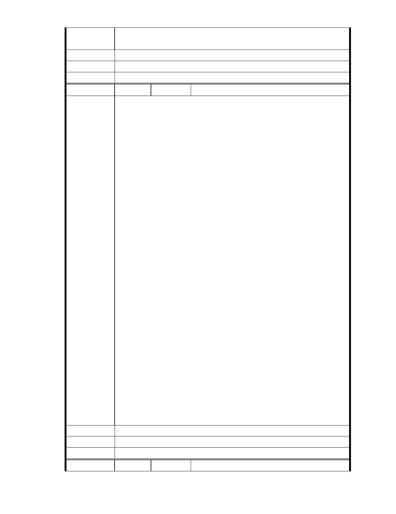

黃仁甫 敬啟
2012/12/9
建議辦法
市 府 說 明 相關陳情意見將納入本案審查人民意見，依法定程序辦理。
委 員 會 決 議 同編號 1。
編
號 184
陳情人 MA201212120004、周心懿
您好,
我是大湖里的居民, 其實和大多數的鄰居一樣,一直以來是沉默的大多數!
看著一群拉白布條的抗議民眾,看到一張張危言聳聽的傳單,心中實在感
到無奈!
現在看到有表達心聲的機會,實在很開心!
記得我去年曾在慈濟園區聽過一場說明會,本人十分認同他們開發重整的
規劃理念!但,昨天親耳聽到社區新任主委,在管委例行會議後以偏頗的言
論抨擊慈濟企圖變更地目,破壞水土保持及防洪功能等……,甚至聳動鄰
居出席說明會表達反對意見…! 心裡真是無限唏噓! 當場,我只能以自身
的經驗,邀請鄰居們去聽聽說明會,去了解事情的真相!
陳情理由
我雖不是土生土長的內湖人,但因為我們喜歡這裡的好山好水以及良好的
生活環境, 結婚後便選擇在大湖里置產,算算至今已有 20 個年頭;這裡就
像我的第二個故鄉,我也相信未來我們還會長久居住下去. 我愛內湖,當然
希望它更好! 現今慈濟想把一塊地重整得更環保,更符合自然生態,甚至規
劃民眾休憩場所,這理應是內湖人的福氣,我實在不明白這樣一件好事,為
何要一直被少數的偏激份子無限期地延宕著?! 那我們這群沉默良善居民
的殷殷期盼,何時才有美夢成真的一天??
會吵的小孩有糖吃,那麼,乖巧的小孩就只能無奈的蜷縮在角落嗎?應該不
是吧!!
由衷地希望相關單位,能秉持著専業,公正的立場, 積極為內湖居民作出明
智的裁決. 謝謝!
大湖里居民周心懿
101.12.08 中午
建議辦法
市 府 說 明 相關陳情意見將納入本案審查人民意見，依法定程序辦理。
委 員 會 決 議 同編號 1。
編
號 185
陳情人 MA201212120187、游秀敏
- 245 -